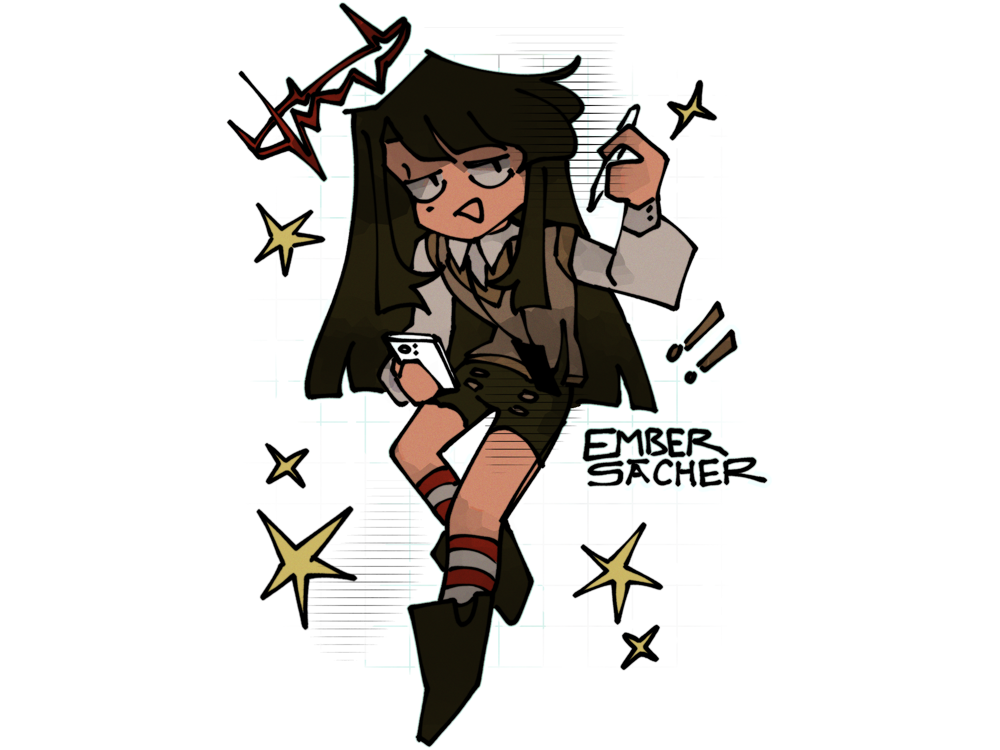

sona skribls
creation date: april 5
character featured: burs
baby's first custom brush lfg
not much to say about this one. i tried to render this with the same technique i used to when i was still using mspaint. it looks significantly different from it, but it turned out decently, simple but effective. i really like this texture brush but it lags the hell out of the program when i increase its size too much ;o;
ohyeah my new sona has a set design now yippee !! shes based on an outfit i own irl eheh (heartrate halo and flesh suit not included) my bbg's a false angel and assassin, moonlighting a humble office worker. the most self-indulgent shit ever actually
